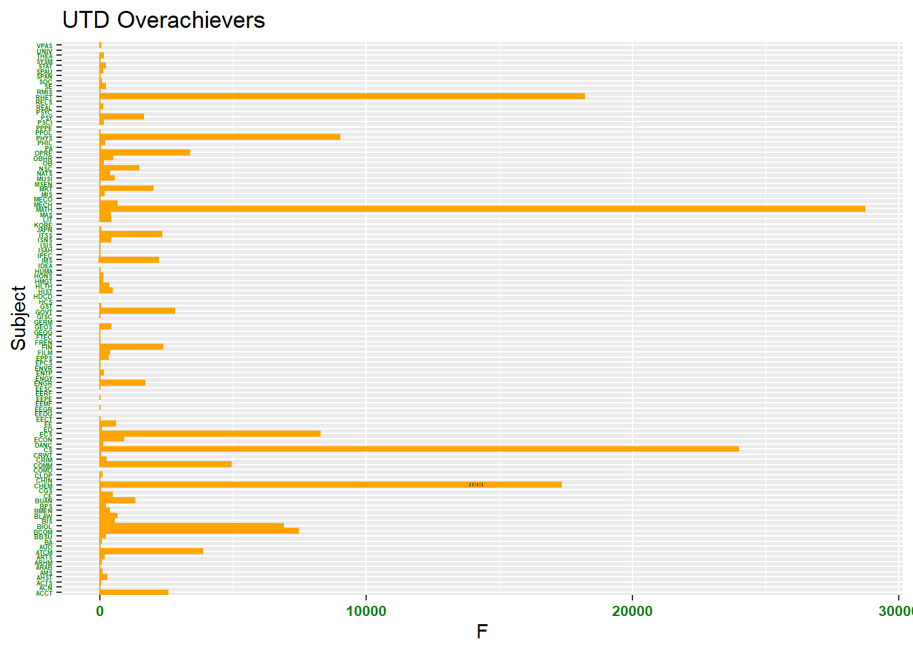

Here we have a bar chart that displays the total count of F’s for UTD students across the indicated subjects for the Fall 2021 and Spring 2022 academic year.

This bar chart shows the number of F’s per EPPS class for the Fall 2021 and Spring 2022 academic year. EPPS 2301 with the strong lead!
This Spider Chart shows the frequency of A grades in Dr. Ho’s classes. Note that the students tend to perform better as the level of the class increases!
Our team diligently collaborated to create these data visualizations. Bel gathered and formatted the data. Leonard worked on the bar chart. Prattasha took the lead on the column chart. Kaitlyn took the lead on the circular area chart. Bel and Leonard edited and merged the group’s work.
Source Code
---title: "Assignment 5"author: "Prattasha, Kaitlyn, Bel, Leonardo"date: "2022-10-18"categories: [Code, R, Plots, Assignment, Hackathon]image: "plot1.gif"draft: trueformat: html: code-fold: true code-tools: trueexecute: echo: falseeditor_options: chunk_output_type: inline---```{r Graph 1}#| warning: false#| fig-cap: ""library(tidyverse)library(WDI)library(ggplot2)library(fmsb)spgrades <-data.frame(read.csv("Spring2022grades.csv"))fagrades <-data.frame(read.csv("Fall2021grades.csv"))grades <-rbind(fagrades, spgrades) #Combine two datasets into one dataframeinstructor <-grep("Instructor", colnames(grades), value =TRUE) #Find column names that has "Instructor"# We're removing all those columns below in the select functiongrades$Course <-paste(grades$Subject, grades$Catalog.Number)# paste is concatenating (combining the values) in two columns# into a new one#Create Total grades column #Create Percentage Columnspct <- grades[4:21]/rowSums(grades[4:21], na.rm=TRUE) *ifelse(rowSums(is.na(grades[4:21])) ==ncol(grades[4:21]), NA, 1)pct$Course <- grades$Coursegrades <-merge(grades,pct, by="Course")# x is count and y is percentage#Filter for Prof. Ho's classeskh_grades <- grades%>%filter(Instructor.1=="Ho, Karl")%>%select(-instructor,-Section, -Subject, -Catalog.Number)# Column names with minus (-) sign means removing. # Here, we are keeping all the columns but those mentioned above```## 1. Bar ChartHere we have a bar chart that displays the total count of F's for UTD students across the indicated subjects for the Fall 2021 and Spring 2022 academic year.```{r}#| warning: false#| fig-cap: ""ggplot(grades, aes(Subject, F.x)) +geom_bar(stat ="identity",color="orange") +coord_flip() +labs(title ="UTD Overachievers", x ="Subject", y ="F") +theme(axis.text.x =element_text(face="bold", color="#008000",size=8, angle=0),axis.text.y =element_text(face="bold", color="#008000",size=3.5, angle=0))```This bar chart shows the number of F's per EPPS class for the Fall 2021 and Spring 2022 academic year. EPPS 2301 with the strong lead!```{r}eppsclass <-grep("EPPS", grades$Course, value =TRUE)EPPS <- grades%>%subset(Course %in% eppsclass)ggplot(EPPS, aes(Course, F.x)) +geom_bar(stat ="identity",color="orange") +coord_flip() +labs(title ="UTD Overachievers", x ="Subject", y ="F") +theme(axis.text.x =element_text(face="bold", color="#008000",size=8, angle=0),axis.text.y =element_text(face="bold", color="#008000",size=3.5, angle=0))```##. Column ChartThis column chart shows the count of A's in Dr. Ho's classes for the Fall 2021 and Spring 2022 semesters.```{r}grades$Course <-paste(grades$Subject, grades$Catalog.Number)#Filter for Prof. Ho's classeskh_grades <- grades%>%filter(Instructor.1=="Ho, Karl")%>%select(-instructor,-Section, -Subject, -Catalog.Number)# Column names with minus (-) sign means removing. # Here, we are keeping all the columns but those mentioned abovecc <- kh_grades %>%select(Course, A.x, A.y) cccc %>%ggplot()+geom_col(mapping =aes(x=Course, y=A.x),fill =c("limegreen","limegreen", "springgreen4","limegreen", "limegreen")) +labs(x ="Course", y ="A Grade",title="A Grades in Dr. Karl Ho's Class",subtitle ="Fall 2021 & Spring 2022") +geom_text(aes(x=Course, y=A.x,label= A.x),vjust=1.2, size=5,col ="white")```##. Circular Area Chart/ Spider ChartThis Spider Chart shows the frequency of A grades in Dr. Ho's classes. Note that the students tend to perform better as the level of the class increases!```{r Graph 3}#| warning: false#| fig-cap: ""final_scores <-data.frame(row.names =c("Karl_Ho"),EPPS_6323 =c(0.8),EPPS_6354 =c(0.54),EPPS_7386 =c(0.95),PSCI_4314 =c(0.42),EPPS_6356 =c(0.92),PSCI_4313 =c(0.61),EPPS_6302 =c(0.77),EPPS_7V81=c(0.86),EPPS_7318 =c(0.9))final_scoresmax_min <-data.frame(EPPS_6323 =c(1, 0), EPPS_6354 =c(1, 0), EPPS_7386 =c(1, 0),PSCI_4314 =c(1, 0), EPPS_6356 =c(1, 0), PSCI_4313 =c(1, 0),EPPS_6302 =c(1, 0), EPPS_7V81 =c(1, 0), EPPS_7318 =c(1, 0))rownames(max_min) <-c("Max", "Min")df <-rbind(max_min, final_scores)EPPS <- df[c("Max", "Min", "Karl_Ho"), ]radarchart(EPPS, title="Karl Ho A Grade Frequency", pcol="chocolate1", cglcol ="chartreuse4", axislabcol ="chartreuse4", axistype =3)```## Synergy ReportOur team diligently collaborated to create these data visualizations. Bel gathered and formatted the data. Leonard worked on the bar chart. Prattasha took the lead on the column chart. Kaitlyn took the lead on the circular area chart. Bel and Leonard edited and merged the group's work.